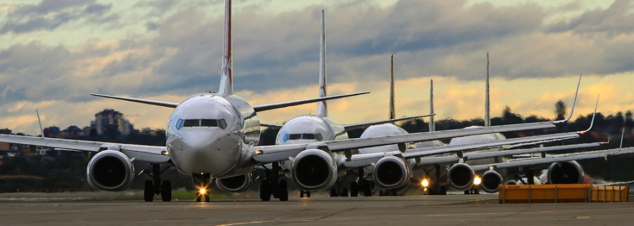

TRANSPORT
It is the way a person/object is moved from one place to another.
Modes of transport include water, air,
land (rail and road),
cable, pipeline and space
types of transport
Modes of transport include air, land (rail and road),
water, cable, pipelines, and space.
The field can be divided into infrastructure, vehicles, and operations.
Transport enables human trade, which is essential for the development of civilizations.
Air as the means of transport
Air transport is that which transports by air,
by means of aircrafts, airplanes, etc.
Allows the movement of people, goods and mail.
Aircraft are the fastest means of transportation
and therefore the most suitable for shipping
products within the supply chain that require fast and agile delivery.
WILLUX transport
air transport images

Importance of air transport
Air transport is an important enabler to achieving economic growth and development.
Air transport facilitates integration into the global economy and provides vital connectivity on a national,
regional, and international scale.
It helps generate trade, promote tourism, and create employment opportunities.